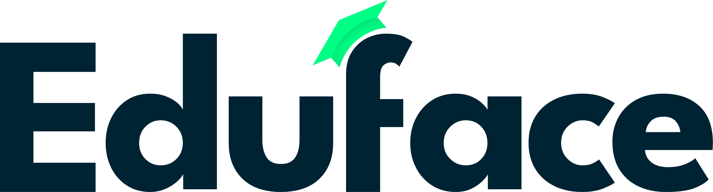

3
GELD
PHOV betaalt docenten voor elk uur dat ze beoordelen
En PHOV eist dat ze feedback geven
CONSISTENTIE
Vooraf liggen de oordelen van beoordelaars ver uit elkaar, pas na overleg komen ze dichter bij elkaar
Daarom kalibreren jullie scripties minstens één keer per twee jaar. De nieuwe rubric is nog niet getest.
Kalibratie hoort over de inhoud te gaan, maar gaat soms over handtekeningen op een formulier
De directie schuift zelf aan om mensen scherp te houden